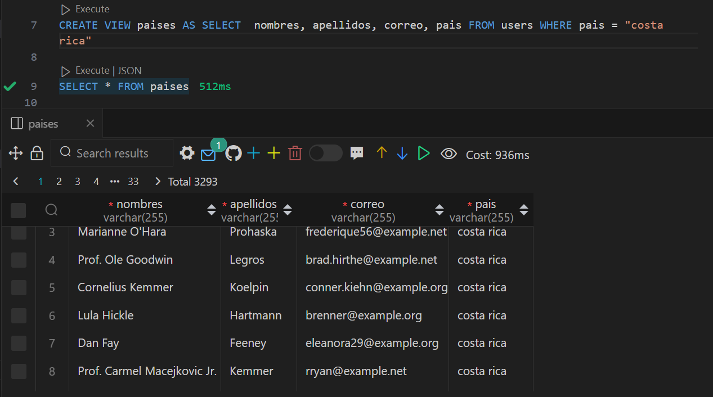
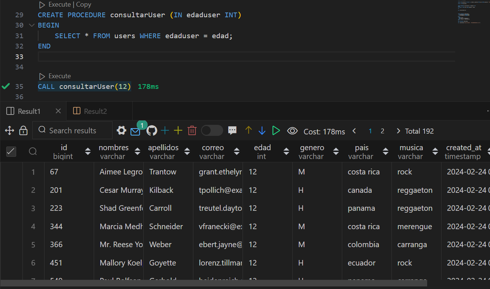

¿Qué son las VIEWS en MYSQL?
Una vista es una tabla virtual que se crea a partir de una consulta SELECT y que se almacena en la base de
datos como un objeto.
Las vistas tienen la misma estructura de filas y columnas que una tabla normal, pero no contienen los datos
en sí, sino que los obtienen de las tablas subyacentes cada vez que se consultan.
Las vistas pueden ser muy útiles para varios propósitos, como:
- Ocultar la complejidad de las consultas que involucran múltiples tablas, uniones, funciones, etc.
- Restringir el acceso a ciertas columnas o filas de las tablas originales, por motivos de seguridad o
privacidad.
- Mejorar el rendimiento de las consultas, al aprovechar los índices y la caché de las tablas subyacentes.
- Facilitar el mantenimiento de la base de datos, al evitar la duplicación de datos y la modificación de
las consultas en varios lugares.

¿Que son los procedimientos almacenados?
Es un programa (o procedimiento) almacenado físicamente en una base de datos. Su implementación varía de un
gestor de bases de datos a otro. La ventaja de un procedimiento almacenado es que al ser ejecutado, en
respuesta a una petición de usuario, es ejecutado directamente en el motor de bases de datos, el cual
usualmente corre en un servidor separado. Como tal, posee acceso directo a los datos que necesita manipular
y sólo necesita enviar sus resultados de regreso al usuario, deshaciéndose de la sobrecarga resultante de
comunicar grandes cantidades de datos salientes y entrantes.
Un procedimiento almacenado de SQL Server es un grupo de una o varias instrucciones Transact-SQL o una
referencia a un método de Common Runtime Language (CLR) de Microsoft .NET Framework. Los procedimientos se
asemejan a las construcciones de otros lenguajes de programación, porque pueden:
- Aceptar parámetros de entrada y devolver varios valores en forma de parámetros de salida al programa que
realiza la llamada.
- Contener instrucciones de programación que realicen operaciones en la base de datos. Entre otras, pueden
contener llamadas a otros procedimientos.
- Devolver un valor de estado a un programa que realiza una llamada para indicar si la operación se ha
realizado correctamente o se han producido errores, y el motivo de estos.

¿Cual es la diferencia entre SQL y NoSQL?
Las bases de datos son los contenedores lógicos que permiten el almacenamiento y acceso ordenado a los datos, tanto estructurados (SQL) como no estructurados (NoSQL), de una organización.
Las principales diferencias entre ambos modelos de BBDD son:
- Las BBDD SQL almacenan datos de manera estructurada y las NoSQL lo hacen en su formato original.
- Las SQL proporcionan una capacidad de escalar baja, en comparación con las NoSQL. Esta es una de las principales ventajas de las NoSQL, ya que están pensadas para grandes volúmenes de información como el Big Data. Lo anterior es debido a que las SQL están centralizadas y las NoSQL distribuidas, posibilitando que se ejecuten en múltiples máquinas pero con muy pocos recursos (RAM, CPU, disco…).
- La adaptación a los cambios de las SQL es poca y puede ser compleja. Sin embargo, las NoSQL son totalmente flexibles.
- Las BBDD SQL están totalmente estandarizadas y las NoSQL carecen de homogeneización.
- Las SQL se utilizan en múltiples aplicaciones de todo tipo, las NoSQL se emplean principalmente para el Big Data (por ejemplo en redes sociales).
- Las BBDD SQL proporcionan consistencia en los datos (integridad). Sin embargo, las NoSQL, al buscar rapidez, no ponen el foco en esta característica.
- La rapidez de ambas BBDD va a depender del contexto o de su uso: en datos estructurados las SQL son más rápidas, pero como vimos anteriormente, el Big Data no es estructurado y es ahí donde consiguen mucha mayor rapidez las NoSQL.
¿Qué es MongoDB?
MongoDB es una base de datos de documentos que ofrece una gran escalabilidad y flexibilidad, y un modelo de consultas e indexación avanzado.
- MongoDB almacena datos en documentos flexibles similares a JSON, por lo que los campos pueden variar entre documentos y la estructura de datos puede cambiarse con el tiempo
- El modelo de documento se asigna a los objetos en el código de su aplicación para facilitar el trabajo con los datos
- Las consultas ad hoc, la indexación y la agregación en tiempo real ofrecen maneras potentes de acceder a los datos y analizarlos
- MongoDB es una base de datos distribuida en su núcleo, por lo que la alta disponibilidad, la escalabilidad horizontal y la distribución geográfica están integradas y son fáciles de usar
Listar en MongoDB